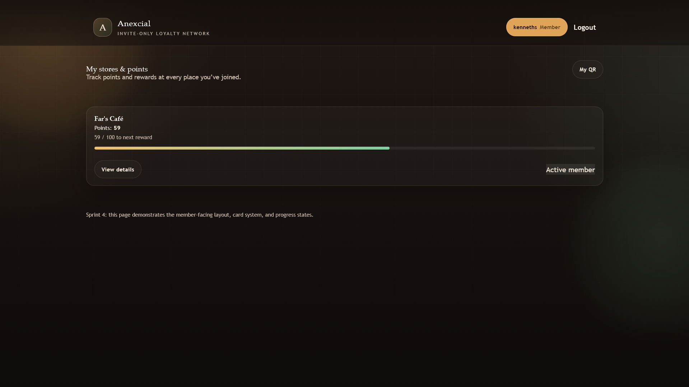
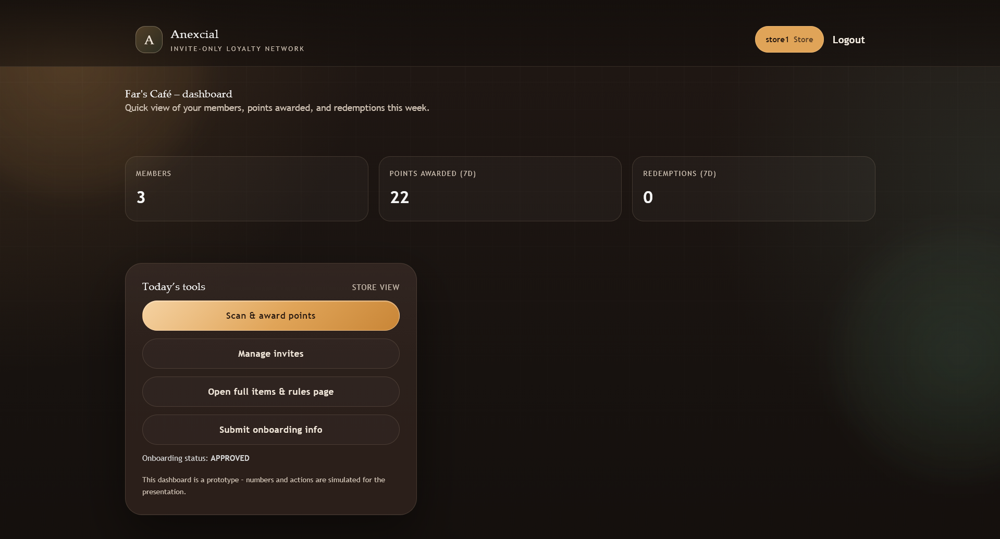
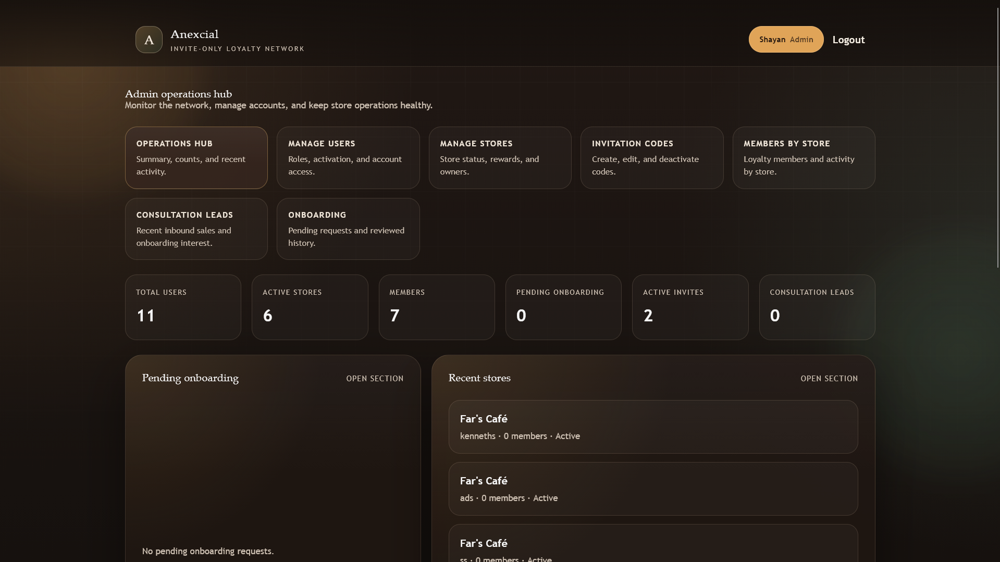
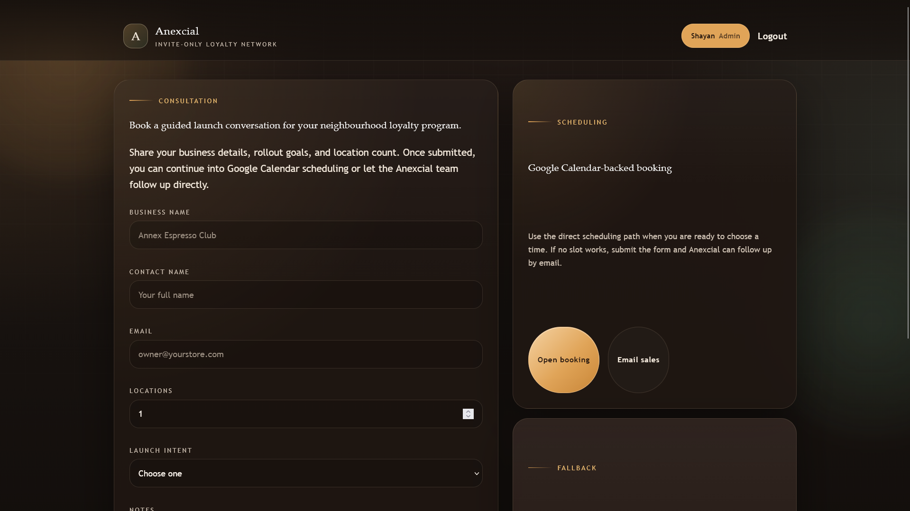
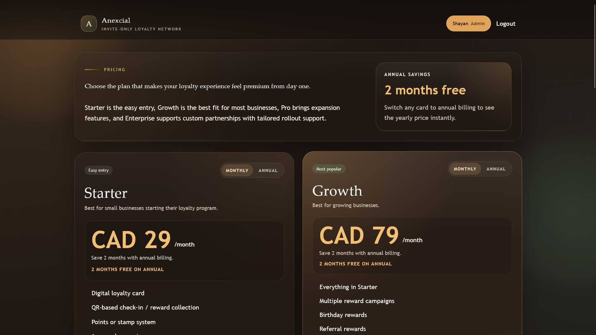

Anexcial






Anexcial is a full-stack Django web app for an invite-only customer loyalty platform aimed at neighbourhood businesses like cafes and small retail stores. The product combines a marketing site, a role-based loyalty system, store operations tooling, and an internal admin or operations hub.
The core idea is to make loyalty feel more premium and controlled than a typical public points app by using curated store onboarding, invite-only member access, QR-based member identification, and an auditable points ledger.
This project highlights full-stack product thinking across customer experience, operations, platform trust, and secure back-office workflows.
What the project does
- Public-facing marketing site with home, pricing, consultation, catalog, FAQ, privacy, and terms pages.
- Invite-based member registration, where customers join using store-issued invite codes.
- Store account onboarding, including review workflow for approval or rejection.
- Member dashboard showing store cards, point balances, reward thresholds, reward eligibility, and transaction history.
- QR-based member identity flow, where each member gets a UUID-backed QR code.
- Store dashboard for scanning member QR payloads, awarding points, redeeming points, managing catalog items, and issuing invites.
- Admin operations hub for managing users, stores, invite codes, member activity by store, consultation leads, and onboarding requests.
- Health and readiness endpoints for operational monitoring:
/healthz/and/readyz/.
Core business features
- Invite lifecycle with database-backed codes, activation flags, expiration, max usage limits, and usage tracking.
- Store-specific item catalog where each item has a server-defined point value.
- Points ledger with award and redeem transaction types.
- Reward redemption based on store-defined thresholds and reward labels.
- Duplicate-scan fraud protection to prevent immediate repeated awards.
- Role-aware routing for members, store staff, and admins.
- Consultation lead capture for sales-assisted onboarding and plan selection.
- Multi-plan pricing structure: Starter, Growth, Pro, and Enterprise.
Tech stack
- Backend: Python, Django 5.
- Database: SQLite for local development, optional PostgreSQL in production.
- Frontend: Django templates, HTML, CSS, vanilla JS.
- Imaging:
qrcodeplus Pillow for QR generation. - Auth: Django auth system with user roles via
is_staff,is_superuser, and groups. - Testing: Django test suite.
- Deployment and security readiness: environment-based settings, secure cookie flags, HSTS, CSRF trusted origins, and logging config.
Architecture highlights
- Data models include Store, MemberProfile, StoreItem, PointsTransaction, InviteCode, StoreOnboardingRequest, and ConsultationLead.
- Business logic is mostly handled in Django views with role checks, atomic database transactions, and server-side validation.
- Marketing content is centralized in
app/marketing.py. - Shared marketing and navigation context is injected through
app/context_processors.py. - Security and environment config live in
project/settings.py. - Route structure is defined in
project/urls.py.
Project vision
The vision for Anexcial is to give neighbourhood businesses a more premium and controlled loyalty experience than a typical open points app. Instead of generic public enrollment, the platform focuses on curated store onboarding, invite-only customer access, operational oversight, and trust-first member rewards.
Project and business requirements
- Allow approved stores to onboard and manage their own loyalty operations.
- Support invite-only member registration tied to store-issued access codes.
- Maintain accurate point balances using an auditable transaction ledger.
- Enable secure point awarding and redemption through QR-based member identification.
- Provide internal visibility for onboarding requests, leads, user management, and store activity.
- Protect against abuse through duplicate scan prevention, validation rules, and role-based access control.
Project plan
- Phase 1: define user roles, loyalty rules, and the invite-only operating model.
- Phase 2: build the public marketing site and consultation capture flow.
- Phase 3: implement core Django models, authentication flows, and store onboarding.
- Phase 4: build member and store dashboards with QR-based point workflows.
- Phase 5: add admin operations tooling, environment-based security settings, and tests.
Requirements analysis and design
The system design separates the platform into public marketing, member experience, store operations, and internal admin management. Role checks, transaction safety, and server-side validation were prioritized so the loyalty rules could not be bypassed from the client side, while the interface kept each user type focused on the actions relevant to them.
Wireframes and mockups
The screenshots in the image slider represent the visual planning and final implementation of the product experience, including dashboards, admin views, and loyalty interactions. They act as the mockup and interface evidence for the portfolio presentation of the project.
Status reports
The project reached a working, portfolio-ready state with completed core flows for onboarding, invites, points management, QR identification, admin operations, and automated testing. The current verification state is stable, with all 42 tests passing.
System implementation
The final implementation uses Django 5 with server-rendered templates, SQLite for development, optional PostgreSQL for deployment, vanilla JavaScript for client interactions, and QR image generation through qrcode and Pillow. The application includes operational endpoints, security-oriented environment settings, and a multi-role architecture that supports real business workflows.
Verification
Current test suite passes: 42 tests, all green.
Portfolio-ready project summary
Anexcial is a Django-based invite-only loyalty platform for neighbourhood businesses. I built a multi-role web application that supports member QR identities, store-managed reward catalogs, invite-based onboarding, point awarding and redemption, and a full admin operations hub for managing users, stores, consultation leads, and onboarding approvals. The platform emphasizes trust, anti-fraud controls, and operational visibility through an auditable transaction ledger, role-based access, secure environment-driven settings, and automated test coverage.
Resume-style bullets
- Built a full-stack Django loyalty platform with separate member, store, and admin workflows.
- Designed an invite-only membership system with usage-limited, expiring invite codes and onboarding review flows.
- Implemented QR-based member identification and a server-validated points ledger for reward tracking and redemption.
- Developed internal operations tooling for user and store administration, consultation lead management, and onboarding approvals.
- Added security and reliability features including rate limiting, duplicate scan protection, environment-based production settings, and automated tests.